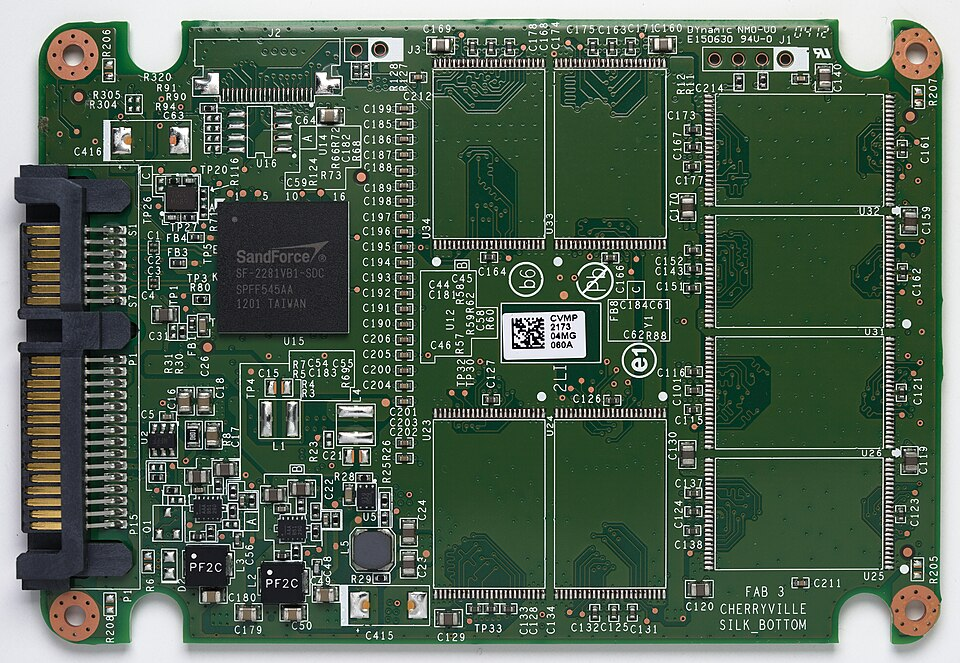
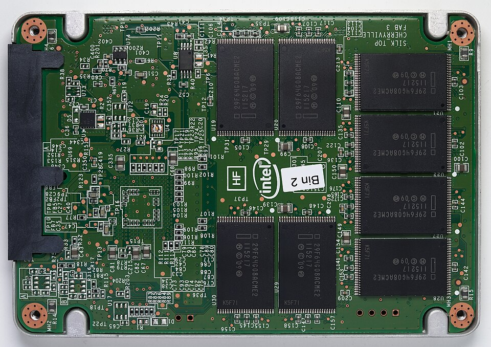

Inside SSDs: flash wear, spare blocks and health reports
Follow a logical block into NAND flash, distinguish remapped blocks from interface errors, and interpret NVMe and SATA health evidence.
Follow one host write through the controller
A drive responds to host requests for logical block addresses. Its flash translation layer records which physical flash pages hold each logical block. NAND can read and program pages and erase larger groups of pages called blocks. To update data, the controller can write a replacement page elsewhere and later reclaim the older space. Wear levelling distributes erase activity. Error correction and spare blocks let the controller deal with some weak pages or unusable blocks behind the interface. This is different from deleting one visible DRAM package on a memory rank. Kingston on error correction and spare blocks · Kingston on over-provisioning · T49 comparison with DRAM.

Photo by Phiarc, scaled with on-page callouts. Original photo · CC BY-SA 4.0.


Photo by Phiarc, scaled with on-page callouts. Original photo · CC BY-SA 4.0.

Watch. Watch where the storage packages and controller go onto the board. Look for the tests that follow board assembly. Kingston’s SSD manufacturing demonstration on YouTube.
A smaller partition changes the logical range that the file system allocates. It does not certify the NAND or repair a drive that drops offline. A controller can lose a power rail, its firmware state or access to a NAND channel. Its mapping and encryption can also make a chip transplant unhelpful for data recovery. Treat an unstable device as a recovery or disposal decision, based on ownership and data value. P93 read-only bench checks.
Use the report field that answers your question
| Reading | What it helps establish | What to compare |
|---|---|---|
| NVMe critical warning | Current warning flags reported by the device, such as low spare capacity or a reliability condition. | Decode the actual bits against the specification and the model’s guidance. A clear warning field is one observation. |
| NVMe available spare and percentage used | Estimated remaining spare capacity and a vendor estimate of endurance consumed. They describe different quantities. | Compare available spare with its threshold. Relate used endurance to the workload and exact model. A value of 100% for percentage used is an estimate of consumed rated endurance. |
| NVMe media and data integrity errors | A cumulative record of unrecovered data-integrity errors detected by the controller. | Compare count changes. The separate error information log can also record command errors, so distinguish which field rose. |
| SATA CRC or vendor-specific health attributes | A rising supported interface CRC count can point to a connection fault. Media and wear attributes have model-specific meanings. | Compare cables, ports and manufacturer definitions. Inspect changes over time under comparable conditions. |
Many NVMe reports show Data Units Written. One reported data unit is 1,000 × 512 bytes, so 80,000,000 units represent about 40.96 TB of host writes. The controller can perform additional internal writes. Use the model’s endurance information and the other health evidence together. NVM Express SMART and health information definitions.
A drive reports 10% used but sometimes disappears. Can you qualify it from the wear reading?
First reproduce the disappearance through a reliable native connection and a known-good reference drive. Watch device detection and capacity, temperature, the warning field and changes in error counters. A low wear estimate cannot resolve a stability fault. Stop testing customer data when evidence points to a failing drive, and follow the authorised recovery decision.
A returned drive needs a separate, authorised data-handling procedure. Partition removal and formatting are different from verified sanitisation. Follow the drive-specific instructions and an appropriate sanitisation standard. NIST media sanitisation guidance.